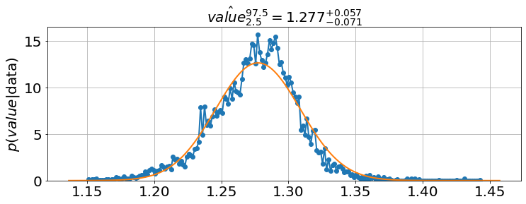
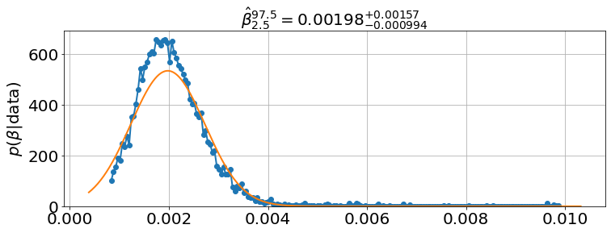

%pylab is deprecated, use %matplotlib inline and import the required libraries.
Populating the interactive namespace from numpy and matplotlib%pylab is deprecated, use %matplotlib inline and import the required libraries.
Populating the interactive namespace from numpy and matplotlibfrom pyndamics3 import Simulationpyndamics3 version 0.0.31from pyndamics3.mcmc import *sim=Simulation()
sim.add("S'=-β*S*I",1,plot=1)
sim.add("I'=β*S*I-ζ*I",.001,plot=1)
sim.add("R'=ζ*I",0,plot=1)
sim.params(β=5,ζ=1)
sim.run(0,10)<Figure size 864x576 with 0 Axes>sim=Simulation()
sim.add("S'=-β*S*I",1,plot=1)
sim.add("E'=β*S*I-ζ*E",0,plot=1)
sim.add("I'=ζ*E-α*I",.001,plot=1)
sim.add("R'=α*I",0,plot=1)
sim.params(α=.3,β=10,ζ=.5)
sim.run(0,10)<Figure size 864x576 with 0 Axes>Notice that no matter what the parameters are changed to, Z (zombies) always win.
sim=Simulation()
sim.add("S'=Π-β*S*Z-δ*S",500,plot=1) #S (Susceptible)
sim.add("Z'=β*S*Z+ζ*R-α*S*Z",.002,plot=1) #Z (Zombie)
sim.add("R'=δ*S+α*S*Z-ζ*R",1,plot=False) #R (Removed)
sim.params(α=.005,β=.0095,ζ=.05, δ=.01,Π=0) #parameters changed to match the Munz et al. (2009) figures
sim.run(0,30)<Figure size 864x576 with 0 Axes>Movie “data” from Night of the Living Dead
t=array([0,1,1.5,3,4.5,5,5.75,5.9,10])
zombies=array([1,1,3,8,10,20,28,30,40])sim=Simulation()
sim.add("S'=-β*S*Z-δ*S",178.5,plot=1)
sim.add("E'=β*S*Z-ζ*E",0,plot=False)
sim.add("Z'=ζ*E-α*S*Z",1,plot=1)
sim.add("R'=α*S*Z+δ*S",0,plot=False)
sim.params(α=.0342,β=.0445,ζ=4.63, δ=0.0)
sim.add_data(t=t,Z=zombies,plot=1)
sim.run(0,10)<Figure size 864x576 with 0 Axes>MCMC parameter estimation for \(\alpha\) (rate of zombies being permanently removed), \(\beta\) (rate of susceptibles becoming infected), \(\zeta\) (the rate of infected into becoming zombies), and \(\delta\) (suicide rate among susceptibles)
model=MCMCModel(sim,
α=Uniform(0,.5),
β=Uniform(0,.5),
ζ=Uniform(0,10),
δ=Uniform(0,.01),
)number_of_iterations=500 # use 500 or so for the figures below, but for CI timeout reasons I include only 5
model.run_mcmc(number_of_iterations,repeat=3)
model.plot_chains()Sampling Prior...
Done.
0.41 s
Running MCMC 1/3...
Done.
1 m, 38.03 s
Running MCMC 2/3...
Done.
1 m, 43.90 s
Running MCMC 3/3...
Done.
1 m, 40.36 s<Figure size 864x576 with 0 Axes>sim.run(0,10)<Figure size 864x576 with 0 Axes>Ro=model.eval('β/α')model.plot_distributions(Ro)
model.plot_many(0,13,'Z')model.triangle_plot()model.plot_distributions()Data from Shaun of the Dead
t=array([0,3,5,6,8,10,22,22.2,22.5,24,25.5,26,26.5,27.5,27.75,28.5,29,29.5,31.5])
zombies=array([0,1,2,2,3,3,4,6,2,3,5,12,15,25,37,25,65,80,100])sim=Simulation()
sim.add("S'=-β*S*Z",508.2,plot=1)
sim.add("E'=β*S*Z-ζ*E",0,plot=0)
sim.add("Z'=ζ*E-α*S*Z",.000347759,plot=1)
sim.add("R'=α*S*Z",0,plot=False)
sim.params(α=2.96e-8,β=0.000808995,ζ=60)
sim.add_data(t=t,Z=zombies,plot=1)
sim.run(0,50)<Figure size 864x576 with 0 Axes>model=MCMCModel(sim,
α=Uniform(0,.01),
β=Uniform(0,.01),
ζ=Uniform(0,100),
)model.run_mcmc(2*number_of_iterations,repeat=3)
model.plot_chains()Sampling Prior...
Done.
0.60 s
Running MCMC 1/3...
Done.
3 m, 42.85 s
Running MCMC 2/3...
Done.
4 m, 28.81 s
Running MCMC 3/3...
Done.
4 m, 40.73 s<Figure size 864x576 with 0 Axes>model.plot_distributions()
model.plot_many(0,35,'Z')model.triangle_plot()t=array([0,3,5,6,8,10,22,22.2,22.5,24,25.5,26,26.5,27.5,27.75,28.5,29,29.5,31.5])
zombies=array([0,1,2,2,3,3,4,6,2,3,5,12,15,25,37,25,65,80,100])
sim=Simulation()
sim.add("S'=-β*S*Z",508.2,plot=1)
sim.add("E'=β*S*Z-ζ*E",0,plot=0)
sim.add("Z'=ζ*E-α*S*Z",.000347759,plot=1)
sim.add("R'=α*S*Z",0,plot=False)
sim.params(α=2.96e-8,β=0.000808995,ζ=60)
sim.add_data(t=t,Z=zombies,plot=1)
sim.run(0,50)
model=MCMCModel(sim,
α=Uniform(0,.01),
β=Uniform(0,.01),
ζ=Normal(10,10,all_positive=True)
)
<Figure size 864x576 with 0 Axes>model.run_mcmc(800,repeat=2)
model.plot_chains()Sampling Prior...
Done.
0.81 s
Running MCMC 1/2...
Done.
2 m, 12.73 s
Running MCMC 2/2...
Done.
2 m, 33.87 s/Users/bblais/opt/anaconda3/lib/python3.9/site-packages/emcee/moves/red_blue.py:99: RuntimeWarning: invalid value encountered in double_scalars
lnpdiff = f + nlp - state.log_prob[j]<Figure size 864x576 with 0 Axes>model.plot_many(0,35,'Z')model.plot_distributions()